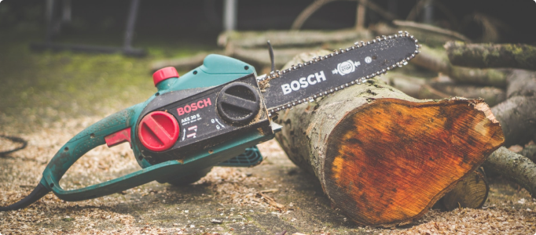

Томат дуже теплолюбний. Насіння починають проростати при температурі 10-15°С, але оптимальна температура для проростання 22-25°С. При зниженні температури до 13-15°С у рослин не розкриваються бутони й обпадає зав’язь, а при 10°С ріст рослин припиняється. При 5°С гинуть квітки й плоди. Легкий заморозок (мінус 1-2°С) є згубним для рослин томату.
Підвищена температура також є несприятливою: при температурі вище +32°С пилкові зерна не проростають, уповільнюється процес фотосинтезу, плоди залишаються блідими.
Томат - світлолюбна рослина короткого дня добре розвивається при інтенсивному сонячному освітленні.
При недоліку світла вуглекислота повітря засвоюється повільно, ріст і розвиток рослин уповільнюються. Дуже вимогливими до інтенсивності освітлення є сходи томату і розсада. Інтенсивність освітлення впливає також на порядок закладки китиць і листя томату.

Нормальна розсада перед пересадженням повинна бути збалансованою з точки зору вегетативно- генеративного розвитку й мати наступні загальні характеристиками: під першою квітковою китицею повинно бути 9-10 листків; міжвузля повинно бути правильно розташоване (середня довжина - 5-7 см, у залежності від гібрида); стебло рослини не повинно бути занадто товстим або занадто тонким.
Для напівдетермінантних гібридів не слід допускати утворення квітучої китиці на розсаді, що висаджується, а висаджувати тільки лише рослини без квітучих китиць. Якщо немає можливості уникнути цього, то необхідно зробити обрізку перших китиць, інакше може відбутися ухил у бік занадто сильного генеративного розвитку рослини.
Висаджують розсаду на постійне місце вертикально, уникаючи засипання стебла. Існує декілька способів розміщення рослин томату в теплицях. Найбільш розповсюджений для індетермінантних гібридів - дворядковий: (90-100)+(60-70)х(50-55) см, тобто відстань між рядами рослин 60-70 см, між доріжками 90-100 см. Густота стояння для ранньостиглих гібридів 2,4 рослин/м2, для основних посадок - 2,5 рослин/м2, розсаду висаджують шаховому порядку. Напівдетермінантні гібриди розміщують з більшим загущенням - 2.6-3 р/м2 (при вирощуванні в 1 стебло).

Після посадки проводять полив (2-3 л/ м2).Температурний режим коректують залежно від рівня освітлення. У похмурі дні в теплиці необхідно підтримувати температуру повітря на рівні 20°С вдень і 17°С - уночі, у сонячні дні - 22°С і 18°С відповідно. Через 2-3 дні рослини підв’язують до вертикально натягнутого шпагату й повторюють цю операцію раз на тиждень.
Після посадки проводять полив (2-3 л/ м2).Температурний режим коректують залежно від рівня освітлення. У похмурі дні в теплиці необхідно підтримувати температуру повітря на рівні 20°С вдень і 17°С - уночі, у сонячні дні - 22°С і 18°С відповідно. Через 2-3 дні рослини підв’язують до вертикально натягнутого шпагату й повторюють цю операцію раз на тиждень.

Концентрація С02 у навколишній атмосфері звичайно становить приблизно 340 частин на мільйон. Під час відсутності вентиляції нормальна концентрація двоокису вуглецю в теплиці буде знижуватися внаслідок поглинання її рослинами крізь устячка. С02 також виді ляється органічним матеріалом ґрунту, але у недостатніх для рослини кількостях. Занадто низька концентрація С02 у теплиці буде призводити до переривчастого росту.
Посилення вентиляції дозволить підвищити концентрацію С02. Найбільша потреба в С02 спостерігається під час високої сонячної радіації. По можливості, проводьте вентиляцію щодня; крім збільшення концентрації С02 знижується відносна вологість повітря.